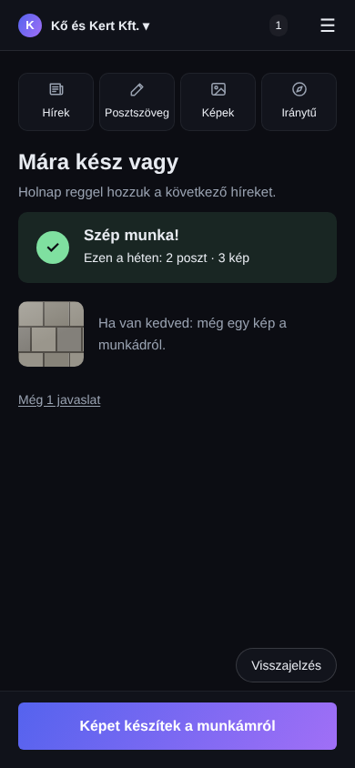
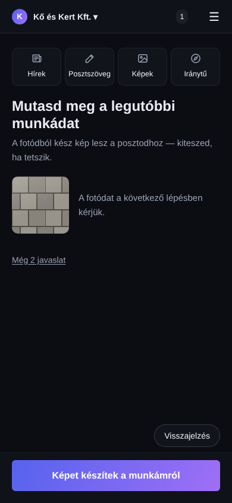
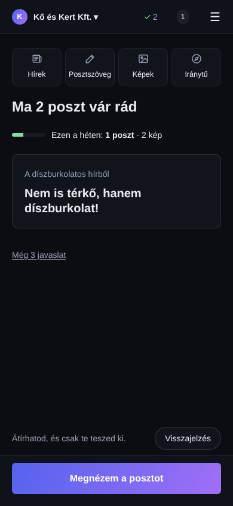
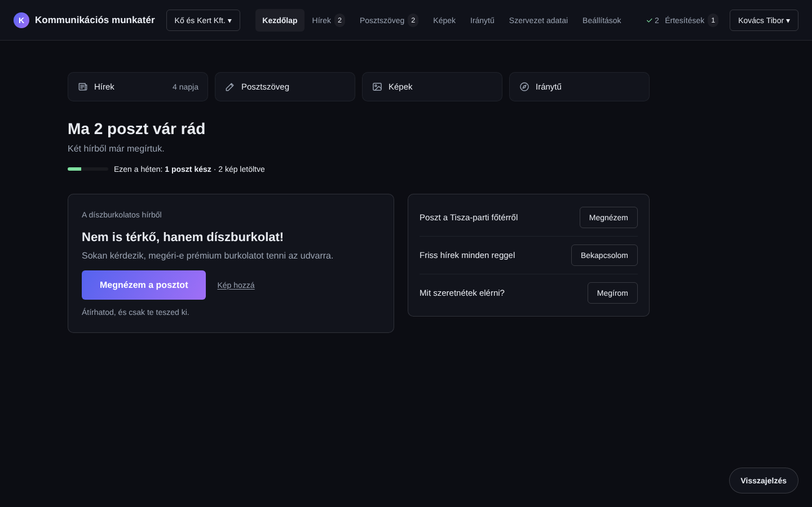
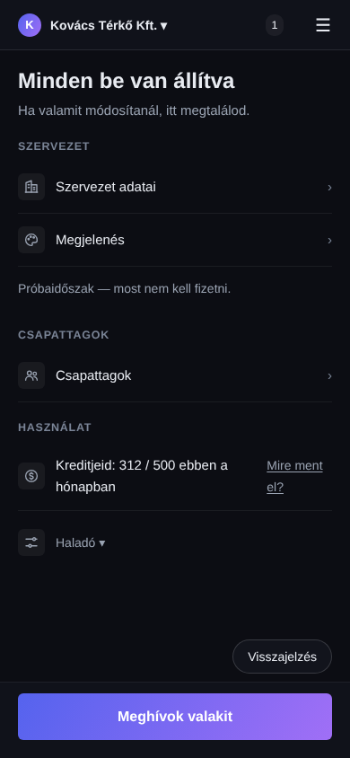
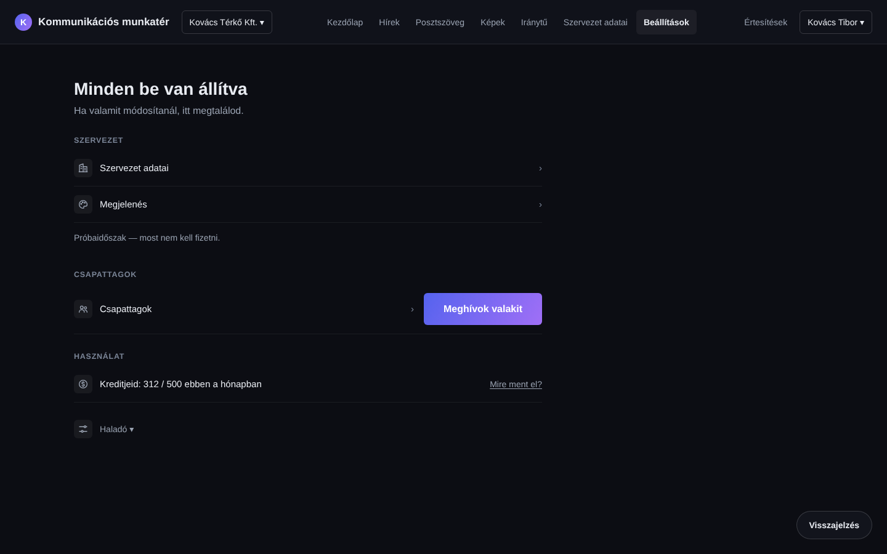
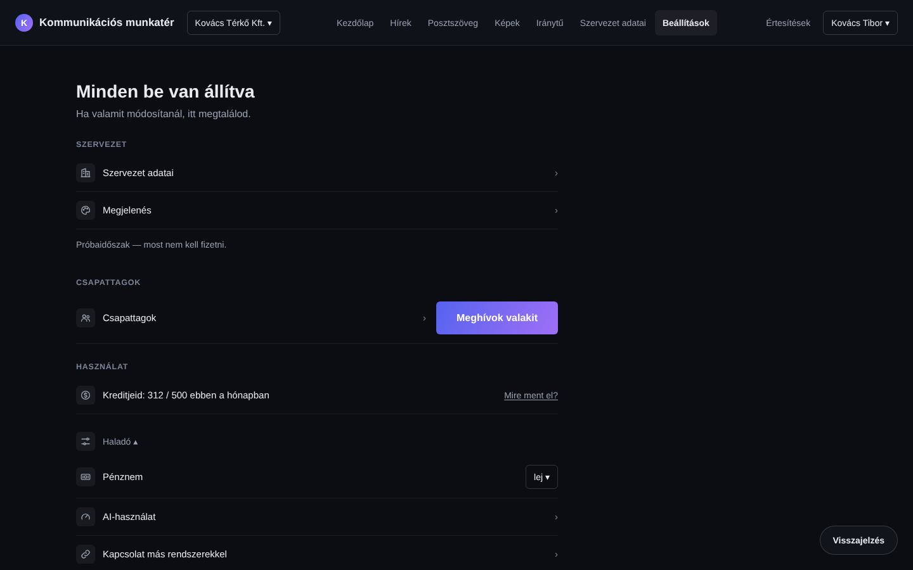
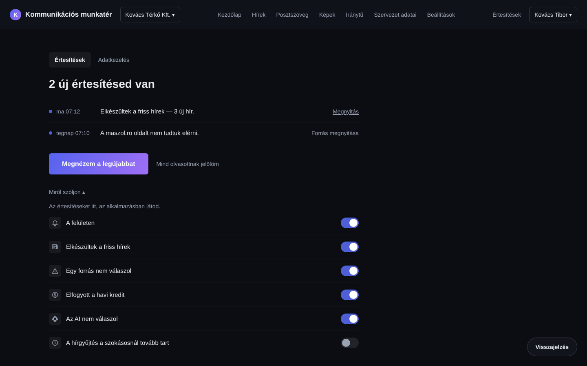

Q2 Phone: the list rows fold into „Még n javaslat” ★
Q3 The last-search line becomes the Hírek tile time ★
Q4 Phone: one row of four ★
03cT · 03c2T · 03jT — the same tiles on the other states
43·39 · 43·34 · 59·38 words · judged

03cT phone

03c2T phone

03jT phone

03jT desktop
03c2 phone: the „Friss hírek minden reggel” row folds into „Még 2 javaslat” (otherwise 41/40).
13 Beállítások · 14 switches — icons
probe green · not judged

13 phone

13 desktop

13 Haladó open

14 switches
One small line icon per row in a calm rounded square — iPhone-settings feel. Inline SVG in the text colour token; no icon font, no package.
Q5 Icons on 13 rows and the 14 switches, not on the notification list ★
Old items checked against main 4923dbe
Item
Verdict
Evidence
(a) Erika 09-24 Notificări — mixed languages
FIXED
/beallitasok fully in the UI language (HU and RO measured, 390 + 1440)
(b) Kamilla 09-16 Hírek — could not run the trial
not verifiable here
„Keress most új híreket” (R15Hirek.tsx:131) is disabled for viewers / during a run / with no credit; no news runner locally — check on the NAS with her account
(c) Szente 09-16 — default language = the project's
FIXED
posts use the organisation's first content language (r15/index.ts:22–26)
(d) Szente 09-16 — larger file / PDF
PARTLY
PDF accepted up to 10 MB (3 MB → 201, 11 MB → 413); bigger is refused by design